Métodos de interpolación geoestadística
Existen diversos métodos de interpolación geoestadística, los más extendidos en uso son los siguientes:
Método de interpolación IDW
La interpolación IDW (Ponderación inversa de la distancia) es un método exacto de interpolación que estima los valores de la celda promediando los valores de los datos a partir de los valores de sus vecinos. Parte de la afirmación de que los puntos más cercanos tienen más influencia que los más lejanos.
Para establecer una función de proporcionalidad entre el peso y la distancia, la fórmula general queda como sigue:
Un caso práctico sería el siguiente:
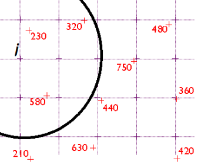 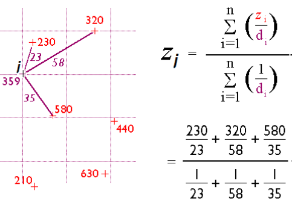
La interpolación IDW permite la generación de información ráster de una forma rápida y simple.
Sin embargo, se trata esencialmente de una media ponderada y, por tanto, el resultado se encuentra siempre incluido dentro del rango de variación de los datos. De no recogerse en la muestra los valores extremos (tales como cimas o valles), estos desaparecen y son sustituidos por tramos llanos. El resultado deriva en un «aplanamiento» de la superficie y la aparición de falsas terrazas.
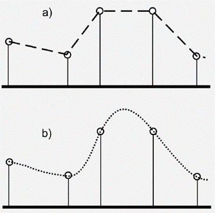
El método IDW solo tiene en cuenta el alejamiento, pero no la posición.
La calidad del resultado de interpolación puede disminuir si la distribución de los puntos de datos de la muestra es desigual.
Método de interpolación Spline
Estima los valores utilizando una función matemática. Como resultado se obtiene una superficie suave que pasa exactamente por los puntos por los que se forma.
Puede predecir valles y crestas en los datos, siendo un método idóneo para representar variaciones suaves de datos tales como temperaturas.
Desde un punto de vista matemático, los splines son funciones polinómicas por tramos, de tal modo que, en lugar de emplear un único polinomio para ajustar a todo un intervalo, se emplea un polinomio distinto para cada tramo.
Este tipo de interpolación puede alcanzar valores fuera del rango definido por los puntos de partida.
En zonas con cambios bruscos de valores, pueden presentarse oscilaciones artificiales significativas. Para solucionar este problema, una solución es el empleo de splines con tensión.
Existen variaciones del método tales como B-splines (Basic splines) o Plate-splines que se asemeja a una flexión que tiene una hoja delgada de metal, de tal manera que el ajuste se resiste más a la flexión penalizando más la suavidad de la superficie.
Método de Vecino natural
La interpolación por vecindad no es adecuada para el trabajo con variables continuas, pero sí para variables categóricas.
Se basa en la teselación de Voronoi, que consiste en unir los puntos entre sí, trazando las mediatrices de los segmentos de unión. Las intersecciones de estas mediatrices determinan una serie de polígonos en un espacio bidimensional alrededor de un conjunto de puntos de control, de manera que el perímetro de los polígonos generados sea equidistante a los puntos vecinos y designan su área de influencia.
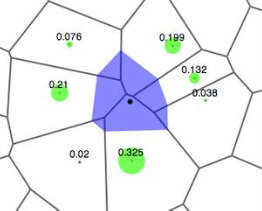
Los denominados polígonos de Thiessen/Voronoi son de uso habitual en el análisis climatológico/hidrológico asociando a cada zona los valores de la estación meteorológica más cercana.
El resultado es una capa con saltos abruptos (tanto como lo sean las diferencias entre los valores de puntos cercanos), con un aspecto «aterrazado».
El conjunto de celdas con el mismo valor (dentro de la misma terraza) representa el lugar geométrico de las celdas cuyo punto más cercano de entre los de partida es uno dado.
Método de interpolación Kriging
Es un método de interpolación muy potente que asume que la distancia o dirección entre los puntos de muestra refleja una correlación espacial que puede ser utilizada para explicar la variación de la superficie total.
Ajusta una función a un número de puntos específicos o a todos los puntos dentro de un radio específico para determinar el valor de la salida para cada localización.
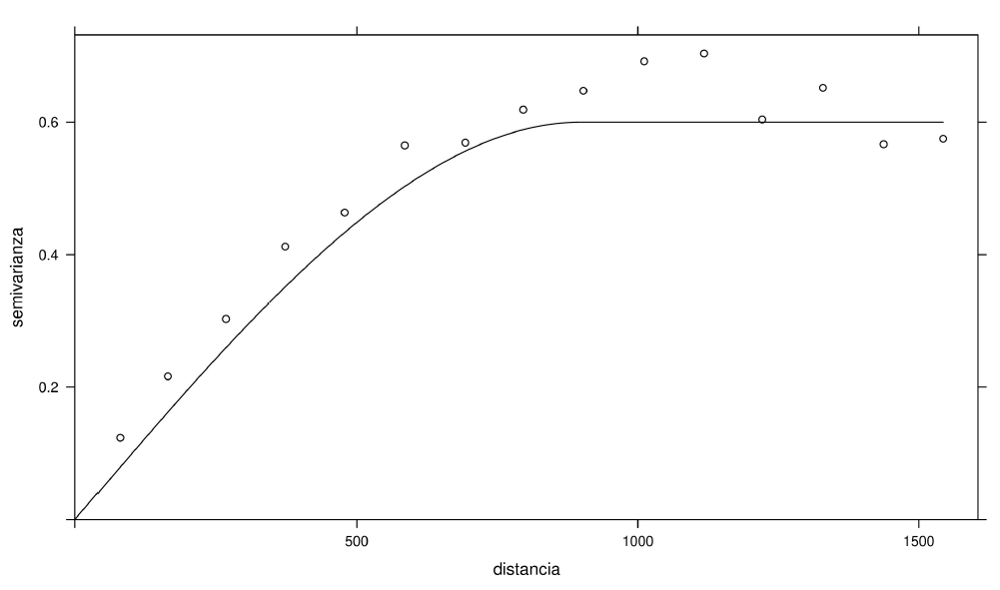
Este método es más apropiado cuando se conoce la distancia de correlación espacial o su dirección, por ello es muy utilizado en ciencias de la tierra y geología.
Los valores pronosticados no tienen por qué estar entre los valores de las muestras y su superficie no pasa por los valores de la muestra.
Junto con la superficie interpolada, el kriging genera asimismo superficies con medidas del error de interpolación (validación cruzada) que pueden emplearse para conocer la bondad de esta en las distintas zonas.
La interpolación óptima debe cumplir los siguientes requisitos, que son cubiertos por el método kriging.
- El error de predicción debe ser mínimo.
- Los puntos cercanos deben tener pesos mayores que los lejanos.
- La presencia de un punto cercano en una dirección dada debe restar influencia (enmascarar) a puntos en la misma dirección, pero más lejanos.
- Puntos muy cercanos con valores muy similares deben «agruparse» de tal forma que no aparezca sesgo por sobremuestreo.
- La estimación del error debe hacerse en función de la estructura de los puntos no de los valores.
El método de Kriging supone que, cuando disponemos de un punto con un valor conocido para una determinada variable, la variación de ésta será menor en el entorno más cercano a dicho punto, sin embargo, conforme las distancias se incrementen respecto al punto conocido, la variación de la variable será mucho mayor.
Por ello se requiere, asimismo, que exista un número suficiente de puntos (mayor de 50) para estimar correctamente el variograma.
A partir de los valores del variograma, se estima un vector de pesos que, multiplicado por el vector de valores de los puntos de influencia, da el valor estimado.
Variograma: es una función matemática que mide la variabilidad, es decir, la desemejanza de una variable, cuando sus valores se observan en puntos que están separados una distancia concreta.
Se trata de representar su gráfica generando las parejas de puntos con los datos reales separados en 1, 2, 3, etc. unidades de distancia a lo largo de una dirección.
En el caso de un variograma, las cosas más cercanas son más predecibles y tienen menos variabilidad. Mientras que las cosas distantes son menos predecibles y están menos relacionadas (correlación espacial).
En puntos de muestreo con distancias cercanas, la diferencia de valores entre puntos tiende a ser pequeña. En otras palabras, la semivarianza es pequeña. Pero cuando las distancias de los puntos de muestreo son más alejadas, es menos probable que sean similares. Esto significa que la semivarianza se hace grande. A medida que aumenta la distancia entre los puntos de muestra, deja de haber relación entre ellos.
Cuando se tienen dos puntos de muestra en el mismo lugar, se puede esperar que tengan el mismo valor, por lo que la pepita debería ser cero. A veces no es así y esto añade aleatoriedad. Pero antes de que el gráfico empiece a nivelarse, estos valores están espacialmente autocorrelacionados.
Cuando aumenta la distancia, aumenta la varianza. Hay menos pares de puntos separados por distancias lejanas, de ahí la menor correlación entre los puntos de la muestra.
Es importante acotar que la definición de un variograma se ajusta siempre a una dirección específica.
- Si el variograma es similar en diferentes direcciones se puede llamar un variograma isotrópico.
- Si se detectan variaciones bruscas en la definición del variograma en diferentes direcciones corresponde entonces a un variograma anisotrópico en el cual además de la distancia, la dirección influye en la autocorrelación espacial de una variable.
La forma correcta de proceder es seleccionar el tipo de modelo que mejor se ajuste a los datos y que proporcionará una función matemática con relación entre valores y distancias.
Habitualmente se utilizan funciones como la exponencial, la lineal, la esférica, la gaussiana, etc.:
Modelo lineal: 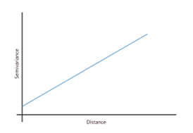
Modelo Esférico: 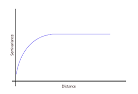
Modelo Exponencial: 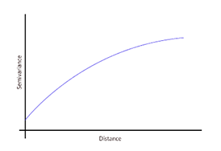
Modelo Gaussiano: 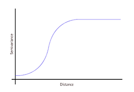
Modelo Circular: 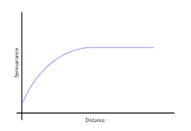
Existen dos tipologías de kriging:
Kriging ordinario
La aplicación del kriging ordinario implica la asunción de una serie de características de los datos:
- La variación es aleatoria.
- Existe dependencia espacial.
- El proceso espacial subyacente es intrínsecamente estacionario con media constante y varianza que depende solo de la separación en distancia entre los sitios y no de su posición.
Kriging universal
La suposición de estacionariedad intrínseca no se cumple cuando existen tendencias geográficas pronunciada de naturaleza sistemática y no aleatoria. La tendencia puede ser regional, es decir, una variación sistemática en toda la región de interés o local de un punto a otro dentro de la región estudiada. La existencia de tendencias puede ser explorada graficando los datos de la variable analizada en función a la variable que se supone genera la tendencia espacial.
La exactitud del kriging depende de varios factores:
- El número de muestras tomadas.
- La calidad de la medición en cada punto.
- Las ubicaciones de las muestras en la zona si las muestras son igualmente espaciadas se alcanza una mejor cobertura.
- Las distancias entre las muestras para la predicción es mejor usar muestras vecinas que muestras distantes esto es, la precisión mejora cuando la cercanía de las muestras aumenta, y se deteriora cuando esta disminuye.
- La continuidad espacial de la variable o atributo en estudio es más fácil estimar el valor de una variable bastante regular en una región que una que presenta grandes fluctuaciones.
Žj es el valor estimado de la magnitud a interpolar para el punto j.
n es el número de puntos usados en la interpolación.
zi el valor en el punto i-ésimo.
kij el peso asociado al dato i en el cálculo del nodo j.
Los pesos k varían entre 0 y 1 para cada dato, y la suma total de ellos es la unidad.
β es un exponente de ponderación que controla la forma en la que el peso disminuye con la distancia.
Datos de precipitación
λi es el factor de ponderación, que se calcula en lugar de por distancias, por correlación mediante variogramas teóricos.
Para comprender la dependencia espacial, los variogramas toman 2 ubicaciones de muestra y miden la distancia entre ambos puntos. En el eje X, se traza la distancia en retardos (lags), que no son más que distancias agrupadas. Tomando cada conjunto de 2 ubicaciones de muestra, mide la varianza entre la variable que estamos midiendo y la representa en el eje Y. En teoría tendríamos que considerar todas las distancias entre 2 muestras y su variabilidad (combinación de todos los puntos tomados de dos en dos). Para no representarlos todos, se hacen agrupaciones con características similares.
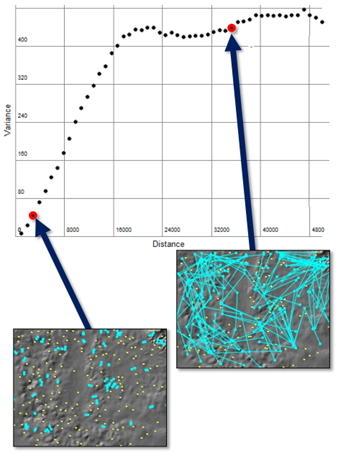
Sill/Meseta: valor en el que el modelo se aplana por primera vez. Coincide con la varianza estadística de la variable.
Range/Alcance: distancia a la que el modelo se aplana por primera vez. Coincide con la distancia máxima sobre el eje donde existe autocorrelación espacial.
Nugget/pepita: valor en el que el semivariograma (casi) intercepta el valor Y.
Un modelo lineal significa que la variabilidad espacial aumenta linealmente con la distancia. Es el tipo de modelo más simple, sin meseta, lo que significa que el usuario tiene que seleccionar arbitrariamente el umbral y el rango.
El modelo esférico es uno de los modelos más comunes que utilizamos en la modelización de variogramas. Se trata de una ecuación cuadrática modificada en la que la dependencia espacial se aplana con el umbral y el rango.
El modelo exponencial se parece al modelo esférico en que la variabilidad espacial alcanza el umbral gradualmente. La relación entre dos puntos de muestra decae gradualmente, mientras que a una distancia infinita la dependencia espacial se disipa.
La función gaussiana utiliza una curva de distribución de probabilidad normal. Este tipo de modelo es útil cuando los fenómenos son similares a distancias cortas debido a su progresivo ascenso por el eje Y.
Este tipo de modelo de predicción utiliza una función circular para ajustar la variabilidad espacial en un variograma. Se asemeja a la función del modelo esférico, donde la dependencia espacial se desvanece en su nivel asintótico.